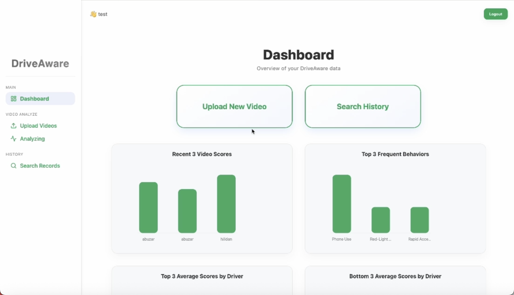
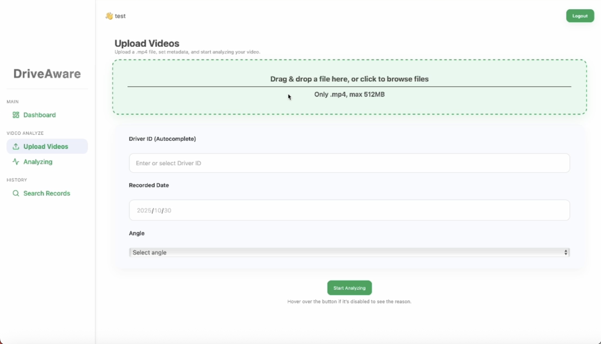
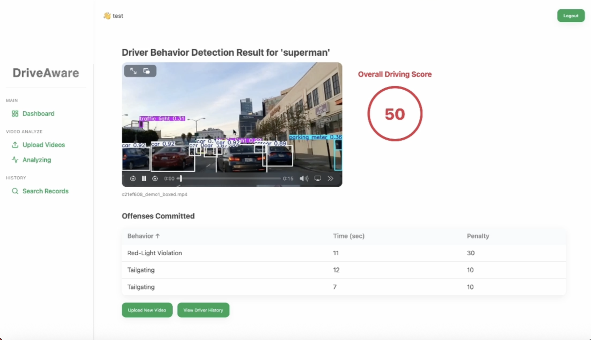
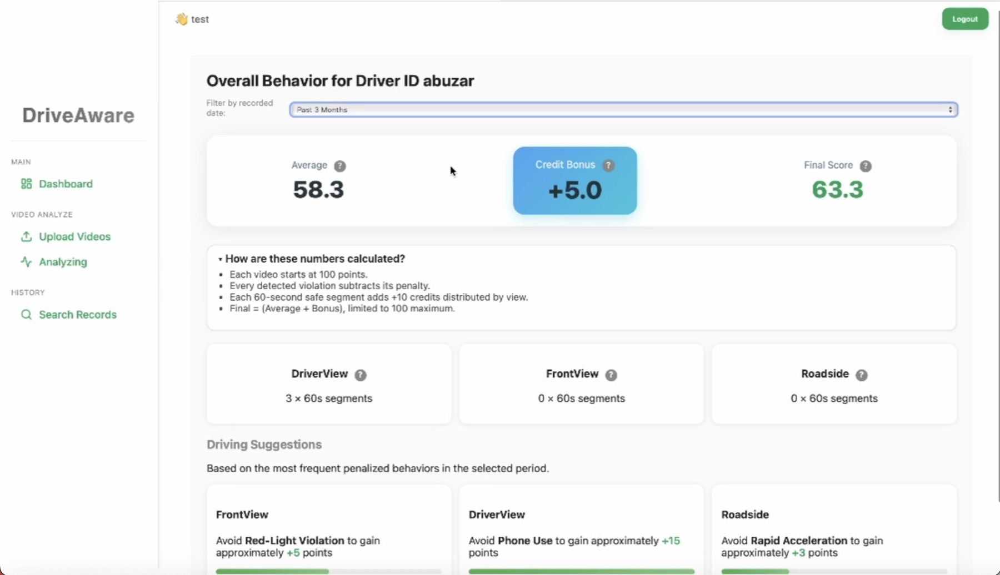
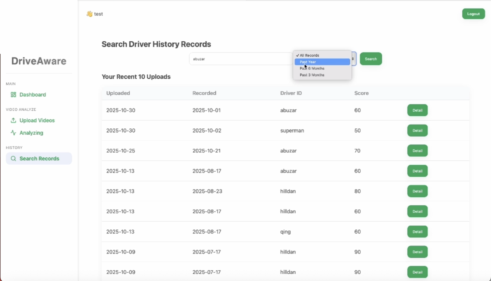

产品设计 + AI 辅助全栈 · 独立交付
产品判断
目标客户——保险、车队监管、政府部门——不缺数据，缺的是把视频变成「可解释评分」的中间层。这个产品的判断不是去判「这个人今天有没有违规」，而是持续观察驾驶习惯，形成长期风险画像。
为什么是「上传视频」这个形态，而不是行车记录仪实时流或 OBD 硬件？因为第一阶段客户的真实工作流是事后审阅——出险了、季度复盘了，才把视频调出来看。实时流要解决设备接入、带宽、隐私合规，那是后面阶段的事；OBD 硬件完全出了软件公司的能力圈。上传式 MVP 是四个月内唯一能跑通、又直接对准客户既有工作流的形态。

产品闭环 · 六步
视频上传
上传一段 MP4，后台以异步任务跑检测，前端每 2 秒轮询一次 status 取进度——上传不阻塞。
视角选择
上传时声明视角（车内 / 前向 / 路边）。这是整个产品的技术枢纽——不同视角能看到的行为完全不同，让用户声明视角，等于让用户帮我做了「路由到哪条检测管线」的决策。
驾驶者筛选
目标客户管的是「一批司机」而不是「一个司机」。数据模型从第一天就是 users→drivers→videos 三层，「按司机出报告」是系统的原生能力，不是事后拼凑。
AI 检测评分
YOLOv8 真跑、导出带检测框视频；规则层判定违规——手机在手、双手离开方向盘、红绿灯 HSV + 光流、跟车 bbox 面积比——落成 100 分制评分。
历史对比
按时间范围（3 个月 / 6 个月 / 1 年）过滤，看某司机的行为频次和评分怎么变——单次检测只是功能，趋势才是洞察。
个性化建议
按每个视角最高扣分项生成针对性改善建议，并给出「避免它大约能提多少分」——建议是前端真算的，不是文案模板。

「架构是真的，参数是演示级的。」这个项目最核心的一次取舍
核心取舍
这是整个项目最核心的一次判断。我选择：检测引擎用真模型、真规则，但判定阈值按演示环境手工标定；同时把全部工程力气押在闭环完整度上。YOLOv8 是真跑的、违规判定是真规则推理，但每个阈值（手机-手腕 90px、方向盘区域 150px、跟车面积占比 10%……）是我在测试视频上手调的，没有标注集回归验证。
这笔账是这么算的：四个月的窗口里，做真闭环的边际收益远大于把某个阈值从「演示可用」打磨到「生产可靠」——后者需要的是数据（标注好的违规片段、多光照多车型样本），而不是代码时间，而第一阶段根本没有这些数据。把闭环做全、把数据模型做对，等客户拿真数据来喂，参数层可以整体替换。
MVP 里该真的，和可以先演示级的，是两种东西。
该真的是数据模型和闭环骨架（改不动的部分），可以先演示级的是参数和边缘功能（可整体替换的部分）。数据模型错一行，后面全歪；阈值差一倍，换一批数字就行。当时精力重前者、轻后者，事后看是对的。

技术架构 · 每个选型都对着一个约束
检测层
YOLOv8 + OpenCV
YOLOv8m + Pose 关键点 + MediaPipe（可选）+ OpenCV 光流。本地权重、Apple Silicon MPS 实测跑通；缺可选依赖时优雅降级不崩。
后端层
Python · FastAPI
异步任务覆盖「上传后分析」，前端轮询 status。选 Python 的决定性理由：AI 生态都在 Python 里，Web 层和推理层同语言，省掉一层序列化胶水。
数据层
SQLite
四层模型 users→drivers→videos→violations + 行为字典 + 评分实时视图。单文件、零运维、演示可携带——整个库拷走就能跑。
前端层
React · Vite
11 个页面。Vite 秒级热更新让一个人全栈迭代翻倍；不引 TypeScript 是刻意的——MVP 阶段类型系统的收益，抵不过 AI 辅助编程在纯 JS 上的流畅度。
评分与长期画像
评分用 100 分基线减扣分，8 类行为的扣分字典是唯一真源（玩手机 −30、疲劳 −40、闯红灯 −30……）。分数不落库，用一个实时视图现算——扣分字典改了，历史分数自动跟着对。设计原则：偶发小错不重罚、高频重复加重，面向长期画像。
光扣分会让分数一路向下，所以我加了正向 credit bonus：安全驾驶时长按视角折算加分，封顶 100。再往上，按每个视角最高扣分项生成个性化建议——让分数不只是审判，而是可改善的目标。


诚实的能力边界
做 AI 产品，能力边界的诚实是产品设计的一部分，不是技术备忘录里的一行小字。这个产品没有一处「看起来能、实际上不能」的功能——下面三个边界，都是主动划掉、而不是藏起来的。
试过让 YOLO 识别安全带，标了一批图，效果很差——安全带和衣服纹理、阴影、斜挎包带在像素层高度混淆。当错误样本人眼都要语义推理才能判对时，纯检测范式就是错的。果断移出承诺范围。
单路固定视角、没有 GPS/IMU/车速接口，真实速度物理上就不可恢复。没有包装成「超速检测」，而是降级为视觉可观测的代理信号：急加速、急刹车、跟车距离变化。
实时摄像头分析在第一期主动裁掉，列进 roadmap。它要解决设备接入、带宽、隐私合规——那是后面阶段的事，是清醒的减法。
同一套诚实也贯穿在交付里：真跑通 YOLOv8 检测 + 带框视频、三视角规则判定、100 分评分视图；演示级 阈值手调无评估集回归、confidence 恒为 0、账号体系是无盐哈希。对客户我从不含糊哪些是真、哪些是演示。
最想讲透的一课
交付时的 demo 数据库和代码里的建表逻辑是漂移的：演示推进中我直接在库里手工加列、手工建表、把评分做成实时视图，但建表代码从没回头同步。后果是——带着演示数据一切正常，换一台机器删库重建，服务当场崩：违规表根本不存在，分析结果无处可写。
根因不是技术，是流程：MVP 冲刺里「改库」比「改建表代码」快十倍，而「新库重建」只在交付后的新机器上才第一次发生——恰好是最需要它工作的时刻。这是典型的 demo 阶段技术债：债在演示路径上不可见，在交付路径上爆炸。2026 年复盘我把它彻底修了，并用「删库重建」实测验证。面试我会主动讲这个 bug——能自己定位、讲清根因、给出修法，比从没踩过坑更有说服力。
「评估体系先于模型迭代——harness 不是后期工程，是第一天就该在的骨架。」阈值「演示级」教给我的
沉淀
阈值演示级欠的债，让我想清楚一件事：缺的从来不是调参，是评估基础设施——没有一个标注好的 golden set，任何阈值调整都无法回答「变好了还是变坏了」。如果重来，我会在第一次调阈值之前，就先冻结 20 段标注视频做回归集。
四个月一个人交付 11 页前端 + 9 个接口 + 580 行推理管线 + 完整数据模型，没有 AI 辅助编程不可能。但我也看清了杠杆的边界——AI 加速的是「写」，不加速「判断」：阈值该不该调、schema 该不该同步、任务定义是不是错了，这些 AI 不替你做，而项目里所有真正的坑都在判断层。AI-coding 让产品经理第一次有了「独立交付完整产品」的可能，但交付质量的下限，仍由工程判断力决定。